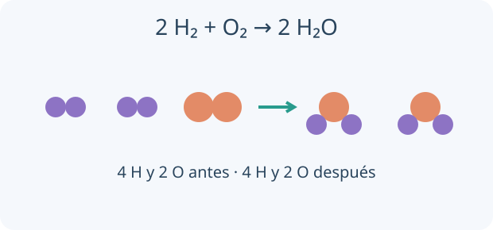

Leé una fórmula como una instrucción de conteo. Un subíndice afecta al símbolo anterior; un paréntesis agrupa varios átomos. En compuestos iónicos, primero escribí las cargas y buscá una proporción eléctricamente neutra, sin imaginar moléculas aisladas.

Se conservan los átomos. Los coeficientes cambian cantidades; los subíndices describen cada entidad.
En una fórmula iónica la suma de cargas debe ser cero. Los subíndices indican la proporción más simple de iones: CaCl₂ contiene un Ca²⁺ por cada dos Cl⁻. Un ion poliatómico conserva su identidad entre paréntesis cuando se repite.
Los óxidos contienen oxígeno con otro elemento; los hidróxidos contienen OH⁻. Hidrácidos como HCl(ac) no tienen oxígeno; los oxoácidos como H₂SO₄ sí. Las sales combinan cationes y aniones. Los hidruros metálicos contienen formalmente H⁻; no asignes siempre +1 al hidrógeno.
2(+3) + 3(−2) = 0 → Al₂O₃
TU TURNO · INTENTÁ RESOLVER ANTES DE MIRAR
Combiná Al³⁺ y SO₄²⁻.
Tu desafío: Escribí la fórmula neutra que forman esos iones y explicá los subíndices y paréntesis.
Ver el ejemplo resuelto paso a paso
El mínimo común múltiplo de 3 y 2 es 6: necesitás 2 cationes y 3 aniones.
La fórmula es Al₂(SO₄)₃; los paréntesis multiplican todo el sulfato.
LECCIÓN 2 / 4 · LEÉ, RESOLVÉ Y COMPROBÁ
Nombrar sin perder información
Empezá desde la idea.
El nombre y la fórmula son dos maneras de describir una sustancia. Antes de memorizar terminaciones, identificá sus elementos y la familia química. Un número romano expresa un estado de oxidación, no la cantidad de átomos del metal.
Stock usa un número romano para el estado de oxidación cuando hace falta: FeCl₃ es cloruro de hierro(III). La sistemática usa prefijos de cantidad: CO₂ es dióxido de carbono. La tradicional utiliza nombres como ferroso/férrico o ácido sulfúrico, que conviene conectar con la fórmula.
Calculá primero estados de oxidación y verificá neutralidad. En oxosales, sulfato procede del ácido sulfúrico y sulfito del sulfuroso. El nombre especifica composición o estado formal de oxidación; no demuestra por sí solo cómo están distribuidos los electrones en un enlace real.
Fe₂O₃: 2x + 3(−2) = 0 → x = +3
TU TURNO · INTENTÁ RESOLVER ANTES DE MIRAR
Nombrá Fe₂O₃ por tres sistemas.
Tu desafío: Deducí el estado de oxidación del hierro y nombrá el compuesto por Stock, sistemática y tradicional.
Ver el ejemplo resuelto paso a paso
Stock: óxido de hierro(III). Sistemática: trióxido de dihierro.
Tradicional: óxido férrico. Son nombres del mismo compuesto.
LECCIÓN 3 / 4 · LEÉ, RESOLVÉ Y COMPROBÁ
Balancear conservando átomos
Empezá desde la idea.
Imaginá que desarmás los reactivos en una mesa de piezas y armás productos sin perder átomos. El coeficiente cambia cuántas entidades hay; el subíndice cambia qué entidad es. Hacé un inventario por elemento a ambos lados.
Una ecuación balanceada tiene igual cantidad de átomos de cada elemento a ambos lados. Cambiá coeficientes, nunca subíndices: modificar H₂O a H₂O₂ cambia la sustancia. El tanteo sirve para ecuaciones simples; el método algebraico transforma los balances en ecuaciones simultáneas.
Si a H₂ + b O₂ → c H₂O, el balance de H es 2a = 2c y el de O es 2b = c. Podés fijar b = 1 para obtener la proporción mínima entera. La masa total se conserva en un sistema cerrado, aunque cambien el número de moléculas y el estado físico.
2 H₂ + O₂ → 2 H₂O
TU TURNO · INTENTÁ RESOLVER ANTES DE MIRAR
Balanceá Al + O₂ → Al₂O₃.
Tu desafío: Encontrá los coeficientes enteros mínimos sin cambiar las fórmulas de las sustancias.
Ver el ejemplo resuelto paso a paso
Igualá oxígeno usando 3 O₂ y 2 Al₂O₃: seis O por lado.
Completá con 4 Al. Resultado: 4 Al + 3 O₂ → 2 Al₂O₃.
LECCIÓN 4 / 4 · LEÉ, RESOLVÉ Y COMPROBÁ
Reconocer familias de reacciones
Empezá desde la idea.
Una reacción es una reorganización de átomos que cambia las sustancias presentes. Las familias permiten anticipar productos posibles, pero siempre hay que considerar qué reactivos hay y bajo qué condiciones. Mirá también los estados físicos y cualquier gas producido.
En una neutralización un ácido reacciona con una base; para ácido fuerte e hidróxido fuerte la ecuación iónica neta es H⁺ + OH⁻ → H₂O. Muchos óxidos metálicos son básicos y varios no metálicos son ácidos; existen excepciones y óxidos anfóteros.
La combustión completa de un hidrocarburo produce CO₂ y H₂O con suficiente oxígeno. Con oxígeno limitado puede formarse CO o carbono, y no hay una única ecuación de combustión incompleta sin especificar productos. Una descomposición como CaCO₃ → CaO + CO₂ requiere condiciones apropiadas.
CH₄ + 2 O₂ → CO₂ + 2 H₂O
TU TURNO · INTENTÁ RESOLVER ANTES DE MIRAR
Neutralizá H₂SO₄ con NaOH completamente.
Tu desafío: Escribí y balanceá la neutralización completa e indicá la sal obtenida.
Ver el ejemplo resuelto paso a paso
Cada mol de ácido aporta dos equivalentes ácidos en la neutralización total.
H₂SO₄ + 2 NaOH → Na₂SO₄ + 2 H₂O.
02
PREDECÍ · INVESTIGÁ · EXPLICÁ
La química en tus manos.
Cargando la mesa de trabajo…
03
LISTO PARA PONER A PRUEBA TU COMPRENSIÓN
Repasá y encontrá qué volver a estudiar.
Ocho preguntas por unidad, con explicación y enlace a la lección correspondiente. Estos resultados se guardan únicamente en este navegador; no se envían al panel docente.